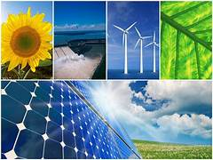

Energías limpias
El uso de energías renovables, como la solar y la eólica, ayuda a disminuir la contaminación y reduce la emisión de gases que afectan al clima. Estas alternativas permiten generar electricidad de forma más responsable con el medio ambiente.
Cada vez más países invierten en tecnologías limpias para disminuir el uso de combustibles fósiles y proteger los recursos naturales del planeta.
Impulsar el desarrollo de energías limpias es una de las mejores estrategias para garantizar un futuro sostenible para todos.